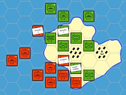

Quando começou e aonde surgiu?
Bom, a história do RPG nos leva para os EUA, entre o fim dos anos 60 e início dos anos 70, tendo uma inspiração direta dos wargames (jogos de guerra), que eram jogos de tabuleiro de estratégia militar.

Clique aqui para você ser direcionado para a pagína oficial da imagem
Em 1971 o escritor Gary Gygax e o designer Jeff Perren, membros da sociedade de wargaming do Lago de Genebra criaram um conjunto de regras medievais para o wargame, que foi chamado de Chainmail. A primeira edição foi dada como um jogo histórico, para simular conflitos da era medieval, mas logo nas seguintes edições o Chainmail trouxe a possibilidade de os jogadores colocarem dragões nas suas histórias dentre outros elementos de fantasia.
Quando o Surgiu o tão conhecio D&D?
Muita calma, nós vamos chegar lá!
Em 1971 foi criado o jogo The Fantasy Game (o jogo da fantasia), que foi uma grande evolução, pois esse jogo permitiu a criação de outros RPG's de mesa, até mesmo foi evoluindo para ficar cada vez melhor. Mas foi em 1974 que o jogo foi rebatizado para Dungeons & Dragons (calabouços e dragões ou cavernas e dragões). Obviamente que quando lançado, o jogo era bem confuso, tendo apenas 3 páginas de regas, MAS evoluindo com o tempo e conquistando seu espaço na cultura GEEK e NERD (além de servir de referência para livros, séries, filmes e músicas).
Desde então o RPG tem conquistado o coração de muitas pessoas, fazendo essas pessoas mergulharem nas histórias, escrevendo e mestrando partidas, e os jogadores interpretando seus personagens. Gostou do estilo de jogo? Eu espero que sim!